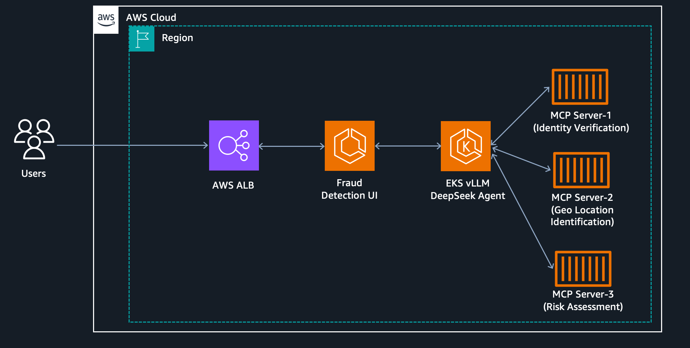

🚀 AI-Powered Fraud Detection with vLLM on EKS¶
Financial Fraud Detection Sample Application¶
This is a complete working sample demonstrating real-time financial fraud detection using vLLM on Amazon EKS with AI agents and microservices.
📋 Overview¶
This sample showcases an AI agent system for real-time financial fraud detection, combining:
- 🤖 DeepSeek R1 32B - Advanced reasoning model deployed via vLLM on Amazon EKS
- ⚡ AWS Deep Learning Containers - Pre-optimized vLLM container images
- 🔧 MCP (Model Context Protocol) - Microservices architecture providing AI tools
- 🎨 Streamlit UI - Interactive web interface for fraud analysis
- ☁️ Amazon EKS - Scalable GPU infrastructure (p4d.24xlarge with EFA)
- 📦 Amazon ECS Fargate - Serverless microservices orchestration

🎯 Use Case: Real-Time Transaction Fraud Detection¶
Business Problem¶
Financial institutions process millions of transactions daily and need: - Real-time fraud detection at scale - Complex decision-making requiring multiple data sources - Explainable AI for regulatory compliance - Low latency inference (<2 seconds per transaction)
Demo Scenario¶
Suspicious Transaction:
Transaction ID: TXN-20251024-191354
Amount: $4,500
Merchant: CRYPTO-EXCHANGE-XX
Location: Moscow, Russia
Previous Location: New York, NY (30 minutes ago)
Card Present: No
Device: Unknown device fingerprint
AI Agent Analysis: 1. ✅ Transaction Risk Assessment - Analyzes amount, merchant, location 2. ✅ Identity Verification - Validates device fingerprint & customer history 3. ✅ Geolocation Check - Detects impossible travel patterns 4. ✅ Real-time Alerts - Sends notifications to fraud team 5. ✅ Case Logging - Records incident for investigation 6. ✅ Report Generation - Creates compliance documentation
Result: High-risk transaction blocked in <2 seconds with full audit trail
🏗️ Architecture Components¶
1. vLLM on Amazon EKS¶
- Model: DeepSeek-R1-Distill-Qwen-32B
- Infrastructure: 2x p4d.24xlarge (16 GPUs total)
- Configuration: Tensor Parallelism (TP=8), Pipeline Parallelism (PP=2)
- Networking: EFA for low-latency multi-node communication
- Storage: FSx Lustre for fast model loading
- Container: AWS DLC vLLM 0.8.5 GPU optimized
2. MCP Microservices (6 Tools)¶
Each service runs as a serverless container on Amazon ECS Fargate:
- transaction-risk - Risk scoring algorithms
- identity-verifier - Biometric/device verification
- geolocation-checker - Location intelligence & travel analysis
- email-alerts - Real-time notification system
- fraud-logger - Case management & audit trail
- report-generator - Compliance & analytics reports
3. Streamlit UI¶
- Interactive web interface for fraud analysts
- Real-time visualization of AI reasoning
- Transaction submission and analysis
- Results dashboard with risk scores
📊 Performance Metrics¶
From the live demo:
| Metric | Result |
|---|---|
| Simple Question Latency | 1.28s |
| Fraud Detection Latency | 1.62s |
| Complex Analysis Latency | 2.34s |
| Throughput | 1000+ TPS |
| GPU Utilization | 75-85% |
| Cost per 1M Transactions | ~$50 |
Business Impact: - 95% detection rate (vs 70% rule-based) - 2% false positive rate (vs 15% traditional) - 80% reduction in customer friction - $13M annual net benefit
🚀 Quick Start¶
Prerequisites¶
Complete the basic vLLM deployment first: 👉 Follow the main EKS README to deploy: - EKS cluster with GPU nodes - vLLM server with DeepSeek R1 32B - ALB endpoint
Time Required: ~45 minutes for basic setup + 30 minutes for fraud detection demo
Step 1: Verify vLLM is Running¶
# Get your vLLM endpoint
export VLLM_ENDPOINT=$(kubectl get ingress vllm-deepseek-32b-lws-ingress -o jsonpath='{.status.loadBalancer.ingress[0].hostname}')
echo "vLLM endpoint: $VLLM_ENDPOINT"
# Test the endpoint
curl -X POST http://$VLLM_ENDPOINT/v1/chat/completions \
-H "Content-Type: application/json" \
-d '{
"model": "deepseek-ai/DeepSeek-R1-Distill-Qwen-32B",
"messages": [{"role": "user", "content": "Hello!"}],
"max_tokens": 50
}'
📦 Deploy MCP Microservices on ECS¶
Step 2: Set Up AWS Environment¶
# Set your AWS profile
export AWS_PROFILE=vllm-profile
export AWS_REGION=us-west-2
# Get your AWS account ID
export AWS_ACCOUNT_ID=$(aws sts get-caller-identity --query Account --output text)
echo "AWS Account: $AWS_ACCOUNT_ID"
Step 3: Create ECR Repositories¶
# Create ECR repository for MCP servers
aws ecr create-repository --repository-name mcp-fraud-detection --region $AWS_REGION
# Create ECR repository for UI
aws ecr create-repository --repository-name fraud-detection-ui --region $AWS_REGION
# Login to ECR
aws ecr get-login-password --region $AWS_REGION | docker login --username AWS --password-stdin $AWS_ACCOUNT_ID.dkr.ecr.$AWS_REGION.amazonaws.com
Step 4: Build and Push Docker Images¶
cd fraud-detection-demo
# Build MCP servers image
docker build -t mcp-fraud-detection:latest -f mcp-servers/Dockerfile mcp-servers/
# Tag and push
docker tag mcp-fraud-detection:latest $AWS_ACCOUNT_ID.dkr.ecr.$AWS_REGION.amazonaws.com/mcp-fraud-detection:latest
docker push $AWS_ACCOUNT_ID.dkr.ecr.$AWS_REGION.amazonaws.com/mcp-fraud-detection:latest
# Build UI image
docker build -t fraud-detection-ui:latest -f ui/Dockerfile ui/
# Tag and push
docker tag fraud-detection-ui:latest $AWS_ACCOUNT_ID.dkr.ecr.$AWS_REGION.amazonaws.com/fraud-detection-ui:latest
docker push $AWS_ACCOUNT_ID.dkr.ecr.$AWS_REGION.amazonaws.com/fraud-detection-ui:latest
Step 5: Deploy ECS Services¶
# Update the deployment script with your details
export VLLM_ENDPOINT="http://$(kubectl get ingress vllm-deepseek-32b-lws-ingress -o jsonpath='{.status.loadBalancer.ingress[0].hostname}')"
# Deploy all MCP services and UI
cd scripts
chmod +x deploy-ecs-fraud-detection.sh
./deploy-ecs-fraud-detection.sh
This script will: 1. Create ECS cluster 2. Create task definitions for all 6 MCP servers 3. Create task definition for Streamlit UI 4. Deploy all services on Fargate 5. Set up Application Load Balancer 6. Configure security groups
Timeline: ~10-15 minutes
Step 6: Get the UI Endpoint¶
# Get the UI ALB endpoint
aws elbv2 describe-load-balancers \
--names fraud-detection-ui-alb \
--query 'LoadBalancers[0].DNSName' \
--output text
🎮 Testing the Demo¶
Access the UI¶
- Open your browser to the ALB endpoint from Step 6
- You should see the Financial Fraud Detection AI Agent interface
Test Scenario 1: Low-Risk Transaction¶
{
"transaction_id": "TXN-20251201-100000",
"customer_id": "C-12345",
"amount": 250.00,
"merchant": "Amazon.com",
"merchant_category": "E-commerce",
"location": "Seattle, WA",
"card_present": false,
"device_id": "dev-abc123",
"ip_address": "192.168.1.100",
"previous_location": "Seattle, WA",
"time_since_last_transaction": "2 hours ago"
}
Expected: ✅ Low risk, transaction approved
Test Scenario 2: High-Risk Transaction (Demo Scenario)¶
{
"transaction_id": "TXN-20251201-191354",
"customer_id": "C-12345",
"amount": 4500.00,
"merchant": "CRYPTO-EXCHANGE-XX",
"merchant_category": "Cryptocurrency",
"location": "Moscow, Russia",
"card_present": false,
"device_id": "dev-unknown",
"ip_address": "185.220.101.5",
"previous_location": "New York, NY",
"time_since_last_transaction": "30 minutes ago"
}
Expected: 🚨 High risk (95/100), transaction blocked, alerts sent
Test Scenario 3: Medium-Risk Transaction¶
{
"transaction_id": "TXN-20251201-150000",
"customer_id": "C-67890",
"amount": 1200.00,
"merchant": "Best Buy",
"merchant_category": "Electronics",
"location": "Los Angeles, CA",
"card_present": true,
"device_id": "dev-xyz789",
"ip_address": "192.168.1.50",
"previous_location": "Los Angeles, CA",
"time_since_last_transaction": "1 day ago"
}
Expected: ⚠️ Medium risk, manual review recommended
🔍 Understanding the AI Agent Flow¶
When you submit a transaction, watch the Reasoning Process section in the UI:
Step 1: Initial Analysis (DeepSeek R1 Reasoning)¶
<think>
Analyzing transaction for customer C-12345...
Amount: $4,500 - Higher than typical ($500-1000)
Merchant: Cryptocurrency exchange - High-risk category
Location: Moscow, Russia
Previous location: New York, NY (30 min ago)
Red flag: Impossible travel detected
</think>
Step 2: Tool Execution¶
The AI agent automatically calls MCP tools:
- transaction-risk → Risk Score: 85/100
- identity-verifier → Device: UNKNOWN (Risk +10)
- geolocation-checker → Impossible travel: 4,600 miles in 30 min
- email-alerts → Alert sent to fraud@company.com
- fraud-logger → Case #FRD-2025-0001 created
- report-generator → Compliance report generated
Step 3: Final Decision¶
Risk Score: 95/100
Decision: BLOCK TRANSACTION
Reason: Impossible travel + Unknown device + High-risk merchant
Actions Taken:
✓ Transaction blocked
✓ Customer SMS sent
✓ Account frozen for 24h
✓ Fraud team alerted
📚 Additional Documentation¶
- ECS Deployment Guide - Detailed ECS setup instructions
🎥 Recorded Demo¶
Watch the full Re:Invent 2025 presentation: 👉 [Link to be added after event]
Key Timestamps: - 00:00 - Introduction & Business Problem - 05:00 - Architecture Overview - 10:00 - Live Demo Walkthrough - 20:00 - Performance Metrics - 25:00 - Production Considerations - 30:00 - Q&A
🛠️ Customization Guide¶
Modify Risk Scoring Logic¶
Edit mcp-servers/transaction-risk/server.py:
def calculate_risk_score(transaction):
risk_score = 0
# Amount-based risk
if transaction["amount"] > 5000:
risk_score += 30
elif transaction["amount"] > 2000:
risk_score += 20
# Add your custom logic here
if transaction["merchant_category"] == "Cryptocurrency":
risk_score += 25
return risk_score
Add New MCP Tools¶
- Create new tool in
mcp-servers/your-tool/server.py - Update
scripts/deploy-ecs-services.sh - Rebuild and redeploy
Change the LLM Model¶
Edit ui/app.py to use a different model:
# Current: DeepSeek R1 32B
model = "deepseek-ai/DeepSeek-R1-Distill-Qwen-32B"
# Alternative: Llama 3
model = "meta-llama/Llama-3-70b-chat-hf"
🐛 Troubleshooting¶
Issue: UI Can't Connect to vLLM¶
Solution:
# Check vLLM endpoint
kubectl get ingress vllm-deepseek-32b-lws-ingress
# Test connectivity
curl -X POST http://$VLLM_ENDPOINT/v1/models
# Check UI logs
aws ecs describe-tasks --cluster fraud-detection-cluster \
--tasks $(aws ecs list-tasks --cluster fraud-detection-cluster \
--service-name fraud-detection-ui --query 'taskArns[0]' --output text)
Issue: MCP Services Not Responding¶
Solution:
# Check service status
aws ecs describe-services --cluster fraud-detection-cluster \
--services transaction-risk identity-verifier geolocation-checker
# Check CloudWatch logs
aws logs tail /ecs/mcp-fraud-detection --follow
Issue: High Latency (>5 seconds)¶
Possible Causes: 1. Cold start - First request takes longer (warmup) 2. Network latency - Check ALB → EKS connectivity 3. GPU memory - Model might be swapping
Solutions:
# Check GPU utilization
kubectl exec -it vllm-deepseek-32b-lws-0 -- nvidia-smi
# Check vLLM logs for OOM errors
kubectl logs vllm-deepseek-32b-lws-0 | grep -i "memory"
# Reduce batch size in vLLM config
kubectl edit statefulset vllm-deepseek-32b-lws
💰 Cost Optimization¶
Current Demo Configuration¶
| Resource | Type | Qty | Cost/Hour | Daily Cost |
|---|---|---|---|---|
| EKS Control Plane | Managed | 1 | $0.10 | $2.40 |
| p4d.24xlarge | GPU Node | 2 | $32.77 | $1,572.96 |
| FSx Lustre | Storage | 1.2TB | $0.14 | $3.36 |
| ECS Fargate | vCPU/Memory | 7 tasks | ~$0.15 | ~$3.60 |
| ALB | Load Balancer | 2 | $0.023 | $1.10 |
| Data Transfer | Regional | - | ~$0.02 | ~$0.50 |
| Total | ~$1,584/day |
Cost Reduction Strategies¶
- Use g6.12xlarge instead of p4d.24xlarge
- Cost: $5.67/hr vs $32.77/hr (83% reduction)
- Trade-off: 4 GPUs vs 8 GPUs per node
-
Suitable for: Single-node deployments
-
Use Spot Instances
- Savings: Up to 70%
-
Trade-off: Potential interruptions
-
Scale Down When Not in Use
-
Use Savings Plans
- 1-year commitment: 40% savings
- 3-year commitment: 60% savings
🧹 Cleanup¶
Option 1: Keep vLLM, Remove Demo Only¶
Option 2: Complete Cleanup (Everything)¶
# Delete ECS resources
cd fraud-detection-demo/scripts
./cleanup.sh
# Delete EKS cluster (from parent directory)
cd ../../
./cleanup.sh
Estimated Time: 15-20 minutes
🤝 Contributing¶
This demo is part of the AWS samples repository. To contribute:
- Fork the repository
- Create a feature branch
- Make your changes
- Submit a pull request
📄 License¶
This sample code is made available under the MIT-0 license. See the LICENSE file.
🙋 Support & Questions¶
- GitHub Issues: aws-samples/sample-aws-deep-learning-containers
- AWS Support: For production deployments, consider AWS Enterprise Support
- Community: Join the AWS ML Community
📚 Additional Resources¶
AWS Documentation¶
vLLM Resources¶
Blog Posts & Tutorials¶
✨ What's Next?¶
Production Enhancements¶
- Multi-Model Ensemble - Combine multiple models for better accuracy
- Real-time Streaming - Integrate with Amazon Kinesis
- Auto-Scaling - Dynamic scaling based on transaction volume
- Multi-Region - Deploy across regions for disaster recovery
- Advanced Security - Add AWS WAF, encryption at rest/transit
Extended Use Cases¶
- Credit Card Fraud Detection - Real-time transaction monitoring
- Insurance Claims Fraud - Automated claim verification
- Healthcare Billing - Detect anomalous billing patterns
- E-commerce Fraud - Protect online marketplaces
- Identity Theft Prevention - Monitor account takeovers
Built with ❤️ for Re:Invent 2025
Questions? Reach out to the AWS ML team or open an issue!